The Right Maid For the Right Job
When it comes to Dragonmaids, it's all about knowing which maid is the right one for you. But more importantly, it's all about which maid is the right one to play. Sure, they're all top-tier waifu material, but sometimes a maid with a medical license is worth twice as much as the one who's a certified chef.Chamber Dragonmaid
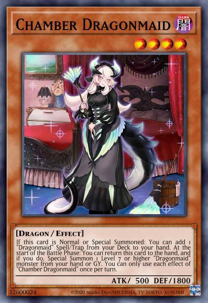
Chamber Dragonmaid is your spell/trap searcher for the archetype. She's also currently the only Dragonmaid who doesn't have a dragon
form. Not to worry though, because she can tag out into pretty much any of the other dragon forms present in the archetype.
Summoning Chamber lets you search your deck for a 'Dragonmaid' spell or trap card and add it to your hand. This is an easy way to access
some of the strongest cards in your deck. Whether it be 'Dragonmaid Changeover' to go into one of your boss monsters, 'Dragonmaid
Hospitality' in order to summon back one of your maids in the graveyard or one from your hand as a form of extension, or even 'Dragonmaid
Tidying' which is a non-destruction removal that can act as a Monster Reborn once it's in your graveyard.
There's no doubt that Chamber is a superb option as both a combo starter or ender. And given her lack of dragon form, it's a good thing
she can tag out with Level 7 or higher Dragonmaid monsters. That means you can tag out into any of the dragon forms or even your boss
monsters like 'House Dragonmaid' or 'Dragonmaid Sheou'!
Kitchen Dragonmaid
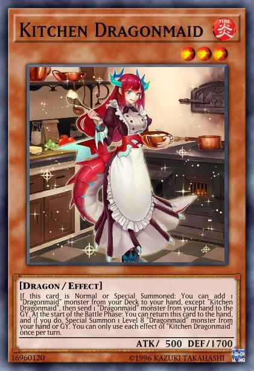
Next on the list in Kitchen Dragonmaid. When summoned, Kitchen allows you to search your deck and add one 'Dragonmaid' monster from
your deck to your hand. However, after doing so you need to discard a 'Dragonmaid' monster from your hand to your graveyard. Depending
on the state of the game and your hand, this second part of Kitchen's effect can either be amazing or unfortunate. More often than not
though, you'll be using Kitchen to set up your battle phase. By grabbing one of the dragon forms from your deck and then immediately
discarding it to the graveyard, you'll be able to use the second effect of your dragonmaids to tag out for the dragon form you just
discarded!
Kitchen herself can tag out for a Level 8 Dragonmaid monster, which means 'Dragonmaid Lorpar' or 'Dragonmaid Tinkhec'. Meaning she's
not as versatile as Chamber, but both Lorpar and Tinkhec have 2700 attacks, which is solid for any battle phase. Or, of course, for
fusing them away into Sheou or House.
Laundry Dragonmaid
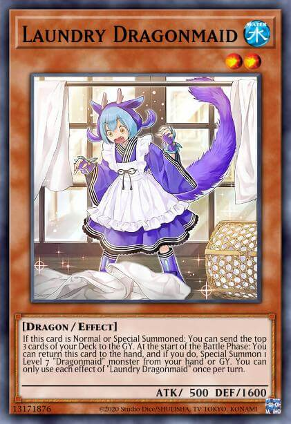
Going down the list, we have the cutest little lady that ever did put on a maid outfit. Still, I won't beat around the bush. Laundry is
arguably the weakest of the Dragonmaids. So much so that she's not usually played in Dragonmaid decks too often. On summon, Laundry
Dragonmaid sends the top 3 cards of your deck to the graveyard. And while this can be nice in some cases, more often than not it's not.
There are a few Dragonmaid cards that do have effects while in the graveyard. And of course, if you end up milling one of your dragon
forms, you can always tag out into it by moving to the battle phase. But those are all niche cases that can't be relied on consistently.
Laundry Dragonmaid shares the same effect as her other Dragonmaid counterparts, being able to tag out when you enter battle phase.
Unfortunately, she can only tag out for a Level 7 'Dragonmaid' monster, meaning she can't swap to anything other than 'Dragonmaid Ernus'
or 'Dragonmaid Nudyarl'.
Nurse Dragonmaid
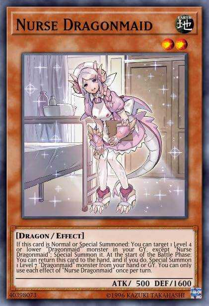
Remember when I mentioned a maid with a medical license? Oh, you skipped that part? No worries, let me give you the rundown. Nurse is
your one stop shop to really start cooking. On summon, Nurse allows you to special summon another Level 4 or lower 'Dragonmaid' monster
from your graveyard, aside from Nurse herself. And when you summon another maid, you get to pop their effect too! Summon a Chamber? Add a
'Dragonmaid Tidying' to your hand to interrupt your opponent on their turn. Summon back a Kitchen? Draw an Ernus and discard it to tag
Nurse out by going to the battle phase. And the best part is, it's not limited to your turn. Meaning if you summon Nurse on your opponent's
turn, you get to pop her effect, summon back another maid in your graveyard, and then pop their effects for even more advantage.
Of course, much like the other maids Nurse also has the effect to tag out for a dragon form. Similar to Laundry, she's forced
to go into a Level 7 'Dragonmaid' monster, limiting her explicitly to either 'Dragonmaid Ernus' or 'Dragonmaid Nudyarl'. So, a tad limiting,
but still solid for all that she enables you to do.
Parlor Dragonmaid
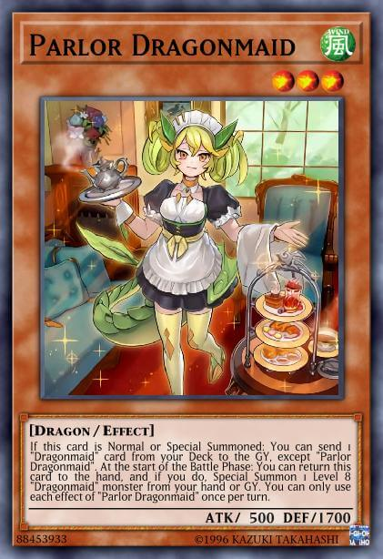
And then we have Parlor. Parlor Dragonmaid is utility and lots of it. On summon, she allows you to send one 'Dragonmaid' card from your deck
to your graveyard. That's right, one CARD. Meaning you're not just limited to monsters, you can toss out spells and traps too if they fit the
bill. Parlor lets you set up your graveyard with exactly what you need, whether that be another maid to help you extend via Dragonmaid Hospitality
or Nurse, whether it be Dragonmaid Changeover so you can fetch it and fuse into one of your boss monsters, or even Dragonmaid Tidying to let you
summon back another 'Dragonmaid' monster from your graveyard by banishing the Tidying.
And like all the others, Parlor has the secondary effect of tagging out with a Level 8 Dragonmaid monster from your hand or graveyard. Level 8 means
either Lorpar or Tinkhec.
Dragonmaid Ernus
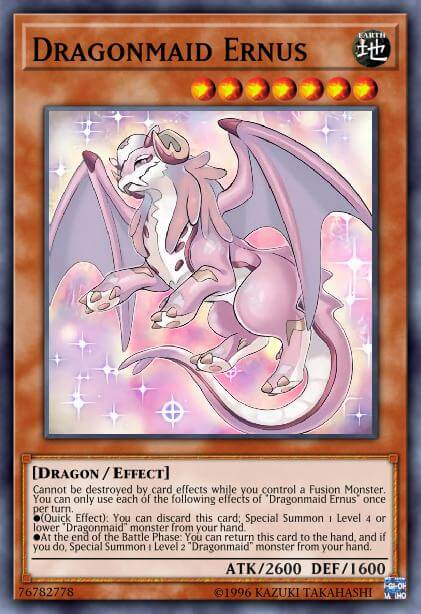
Alright, let's take a peek at some of the dragon forms, shall we? First up, we've got Ernus. Dragon form of Nurse, though of course you can also tag
into her through Laundry or Chamber. In hand, Ernus comes with a mighty fine effect. When in hand, you can trigger Ernus' quick effect to discard her
to the graveyard and then special summon a Level 4 or lower 'Dragonmaid' monster from your hand. Whether you use this effect to extend a combo, or you
use it to make up for having lost your normal summon to some pesky effect or trap, Ernus allows you to recover in positions where you otherwise wouldn't
be able to.
Much like the maid forms, the dragon forms of our lovely maids also have a secondary effect. Namely, being able to tag out at the end of the battle phase.
Something to keep in mind, the tag out effects don't specify your battle phase, meaning you can also pop them on your opponent's turn. Ernus specifically
allows you to tag out for a Level 2 'Dragonmaid' monster from your hand. That means either Nurse or Laundry.
Dragonmaid Lorpar
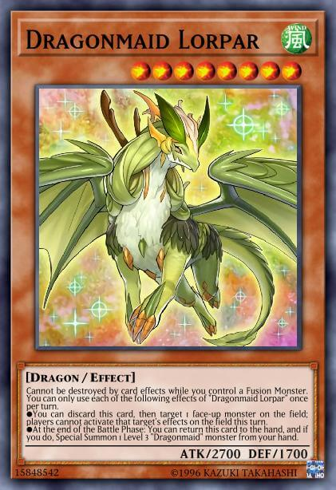
Lorpar's up next. As the dragon form of Parlor, she keeps her aesthetic of utility by having her main effect be a targeting negate. By discarding her from
your hand, you can target one face-up monster on the field and negate its effects until the end of this turn. Keep in mind that this isn't a quick effect,
meaning you can't really pop it in response to other effects to try and stop them. However, it's still decent as a way of baiting your opponent's effects or playing
around them on your own turn.
Like Ernus, Lorpar is able to tag out for one of your maids in hand as well at the end of the battle phase. Specifically, a Level 3 'Dragonmaid' monster,
meaning either Kitchen or Parlor herself.
Dragonmaid Nudyarl
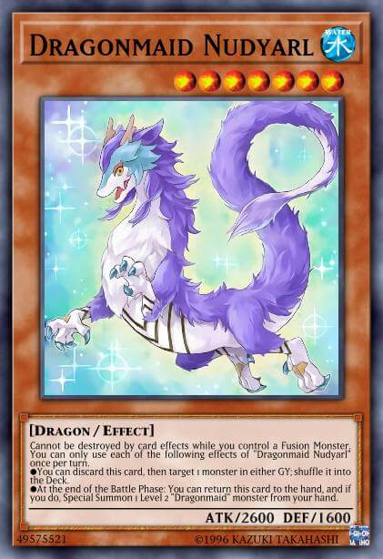
After that, we've got Nudyarl. Being the dragon form of Laundry, she's not played quite as often as the other dragon forms. That, and the fact that her main
effect tends to be incredibly niche. By discarding her, you can shuffle one card from either your or your opponent's graveyard and put it back into their deck.
While this might have its uses, like for example preventing your opponent from being able to utilize the effect of a monster activatable in their graveyard, or
allowing you to return one of your boss monsters to the extra deck so you can resummon them later, overall Nudyarl offers too little in contrast to the other
dragon forms to warrant playing most of the time.
Like the other dragon forms, Nudyarl allows you to tag out with a Level 2 'Dragonmaid' monster. Your targets for this effect will, of course, be either Laundry
or Nurse. A means of summoning Nurse isn't too bad, if you really want to consider playing her. But you could do the same with Ernus as well for a better main
effect.
Dragonmaid Tinkhec
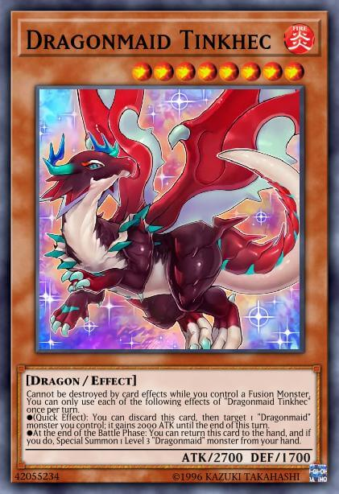
Last but not least, we've got Dragonmaid Tinkhec. The dragon form of Kitchen Dragonmaid. This one comes with a surprisingly potent Quick Effect. By discarding
Tinkhec from your hand to the graveyard, you can target one 'Dragonmaid' monster you control and give it a boost of 2000 attack points! Sure, the boost only lasts
until the end of this turn, but it's still really nice for a variety of things. Whether that be getting over a particularly beefy monster on your opponent's field
by attacking it head on. Or perhaps giving you just enough attack to finish off your opponent and close out the game when you'd otherwise be short.
Tinkhec allows you to tag out for a Level 3 'Dragonmaid' monster in your hand, meaning you can swap her with either Parlor or Kitchen herself.
House Dragonmaid
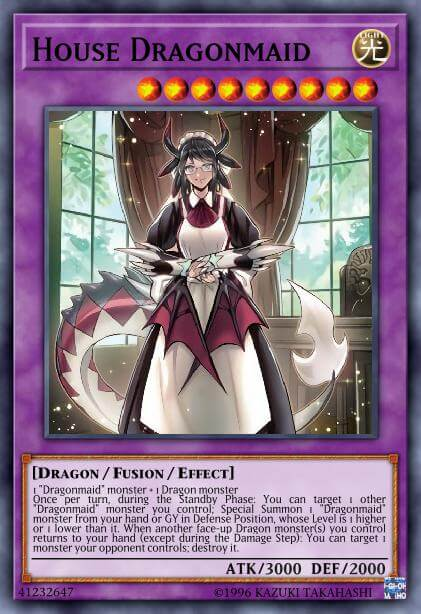
And now we finally get to the big boss of the archetype. Or rather, one of them at least. House Dragonmaid is a 9 Fusion monster that can be summoned by using two
monsters as fusion material. One of those monsters has to be a 'Dragonmaid' monster, while the other has to be a dragon type monster. This means you can essentially
make House with any two maids, no matter the form really.
House comes with two effects. The first effect allows you to, once per turn, during the Standby phase, target one other 'Dragonmaid' monster that you control. Then,
you can Special Summon one 'Dragonmaid' monster from either your hand or graveyard in Defense Position, with the caveat that level of the monster you summon is either
one less than or one greater than the monster you originally targeted with this effect. So, for example, targeting Nurse allows you to summon out either a Kitchen or a
Parlor from your hand or graveyard.
House's second effect is targeting destruction. Essentially, when another face-up dragon type monster, or more, you control return to your hand you can target one monster
your opponent controls and destroy it. This effect isn't limited to once per turn and meshes really well with all the other Dragonmaids and their effects to tag out. It also
works with some of your spells and traps, like Dragonmaid Changeover, Dragonmaid Downtime or Dragonmaid Tidying. The restriction to this effect is that it can not be
activated during the Damage Step.
Dragonmaid Sheou
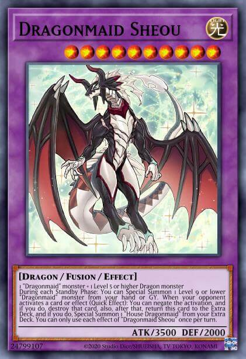
Last, but most certainly not least, we have Dragonmaid Sheou. The dragon form of House Dragonmaid. Hopefully by this point you've noticed that the names of the dragon forms are
just rearranged forms of their maid positions. Regardless, Sheou is the big boss monster of the archetype. A Level 10 Fusion monster that can be summoned similar to House, however
with a few more requirements. Specifically, Sheou requires one 'Dragonmaid' monster and one dragon type monster that's Level 5 or higher. This means you can make her using either
two of the dragon forms, one of the dragon forms and one of the maids, or even just a 'Dragonmaid' and another dragon type monster that's Level 5 or higher regardless of whether it's
a 'Dragonmaid' or not.
Sheou comes with two effects as well, similar to House. The first of these effects allows her to summon a Level 9 or lower 'Dragonmaid' monster from your hand or graveyard. She can do
this during the Standby Phase and only once per turn. This effects works really well with House herself, given that Sheou allows you to summon a specific monster of your choosing and
then House lets you target the recently summoned monster and then summon another monster according to her own requirements.
Sheou's second effect is just as strong as her first. Specifically, it's an omni-negate. Meaning when your opponent activates a card, you can negate the activation and destroy it. This
effect allows you to bypass both targeting immunity and avoid getting hit with cards that might negate your Sheou 'on the field' during her own negation. This is because of the side-effect
of using this effect of Sheou. When you use this effect of Sheou to negate an opponent's card, you return Sheou to your Extra Deck. And if you do that, you can then Special Summon a copy of
House Dragonmaid from your Extra Deck onto the field. Something important to note is that this effect of Sheou can only be used if you have a copy of House Dragonmaid in your Extra Deck. If
you do not, then this effect of Sheou can not be used.
One last little detail regarding Sheou and her connection to House is how she summons House. If you use the negation effect of Sheou and cheat out your House Dragonmaid due to the effect, you
will not be able to summon back that copy of House if it is ever destroyed, by effects like Chamber's tag or Monster Reborn. This is because House Dragonmaid is not considered to have been
properly summoned if she was summoned by the effect of Sheou, and so can not be brought back by such card effects after unless she was properly fusion summoned.